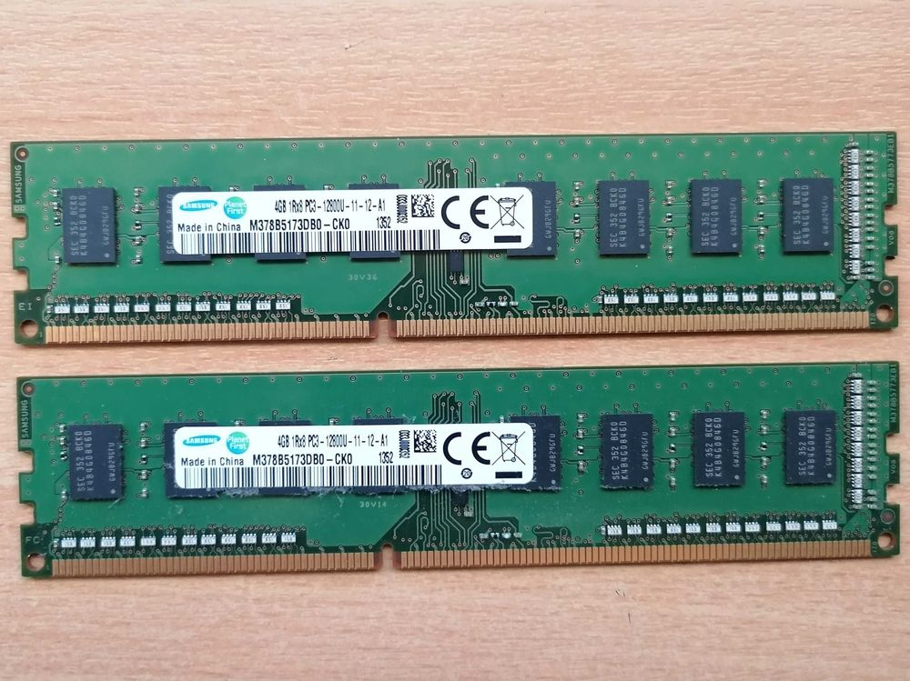

상품의 이야기를 정리하고
상품 종류와 확인된 정보를 입력하세요. 섹션별 기획 카드에서 문구와 이미지 구성을 정리합니다.
THE ART OF PRODUCT STORYTELLING
당신이 고른 이미지, 당신만의 이야기.
브랜드의 분위기가 느껴지는 상세페이지를 완성하세요.
LESS COMPLEXITY. MORE POSSIBILITY.
외부 AI로 준비한 이미지와 문구를 가져오세요.
기획부터 색상, 배치, 최종 이미지까지. 예스디테일에서 하나로 이어집니다.
CURATED MOODS
리빙 · 뷰티 · 라이프스타일

02 / TECHNOLOGY컴퓨터 부품 · 디지털 · 테크
식품 · 원물 · 일상의 상품
분위기 예시입니다. 실제 판매 상품의 정보와 이미지를 넣어 제작하세요.
상품 종류와 확인된 정보를 입력하세요. 섹션별 기획 카드에서 문구와 이미지 구성을 정리합니다.
준비된 프롬프트를 외부 AI에서 사용하세요. 내려받은 이미지와 문구를 원하는 섹션에 불러옵니다.
색상 무드, 큰 제목, 사진 배치를 다듬고 860px PNG 또는 섹션별 PNG로 저장하세요.
이미지에 집중하고, 이야기를 간결하게.
DESIGNED TO BE YOURS
복잡한 도구 대신 필요한 편집에 집중하세요.
사진을 크게 보여주고, 제목의 힘을 조절하고,
상품에 어울리는 색으로 전체를 묶어보세요.
A FEW THINGS TO KNOW
사용하시는 외부 AI에서 이미지를 생성하고 파일로 내려받으세요. 예스디테일의 기획 카드에서 제품 사진으로 불러오면 됩니다. 프로그램 내부에서 AI 이미지를 직접 생성하지는 않습니다.
메모리, CPU, 그래픽카드, 메인보드, 저장장치, 파워·기타 부품, 식품, 일반 상품을 지원합니다. 상품 입력에서 종류를 선택할 수 있습니다.
작업 이어하기를 누르면 같은 브라우저에 저장한 프로젝트를 불러옵니다. 중요한 작업은 편집기의 프로젝트 저장으로 JSON 파일도 보관해 주세요.
전체 상세페이지를 860px 너비 PNG로 저장하거나 섹션별 PNG를 ZIP 파일로 내려받을 수 있습니다. 사진이나 문구의 이용 권한과 상품 정보는 직접 확인해 주세요.
MAKE YOUR NEXT IMPRESSION